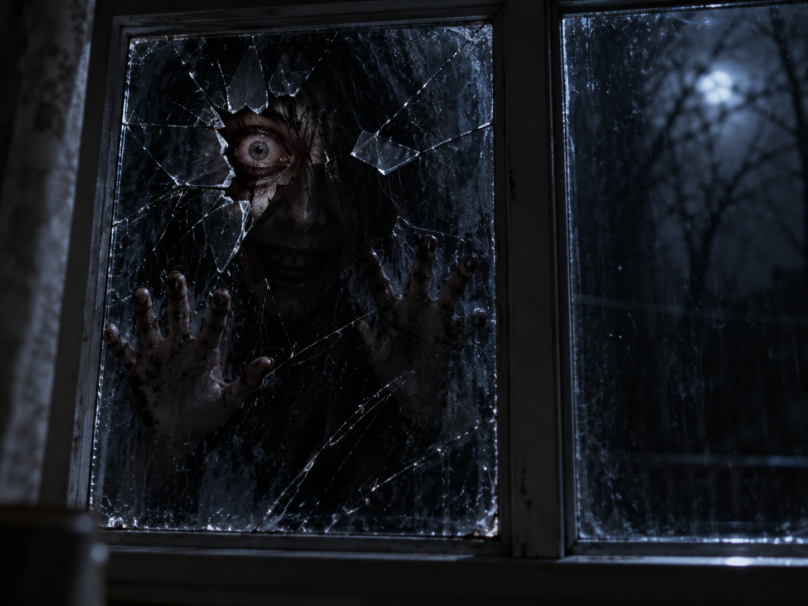

GALLERY — 手書きからの生成作品
窓ガラス越しの狂気の眼
縫魔 妖斗（ぬいま あやと）の画像作品。
作品に会いに
この作品への「見に来たよ」
読み込み中…
設置後の累計訪問回数。作品ページの再表示も含みます。

作品について
縫牢街のギャラリーでは、手書きから生まれた生成作品を掲載しています。
窓ガラス越しの狂気の眼を原寸で見るGALLERY — 手書きからの生成作品
縫魔 妖斗（ぬいま あやと）の画像作品。
作品に会いに
設置後の累計訪問回数。作品ページの再表示も含みます。

縫牢街のギャラリーでは、手書きから生まれた生成作品を掲載しています。
窓ガラス越しの狂気の眼を原寸で見る